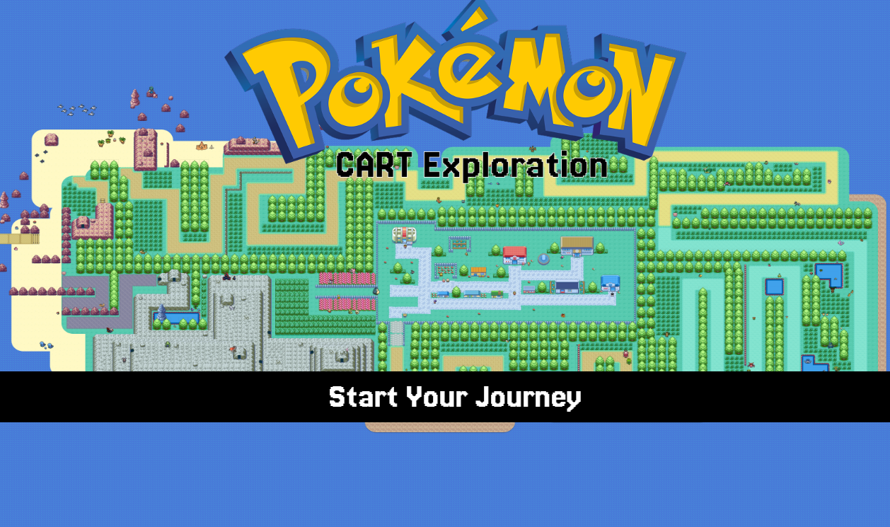
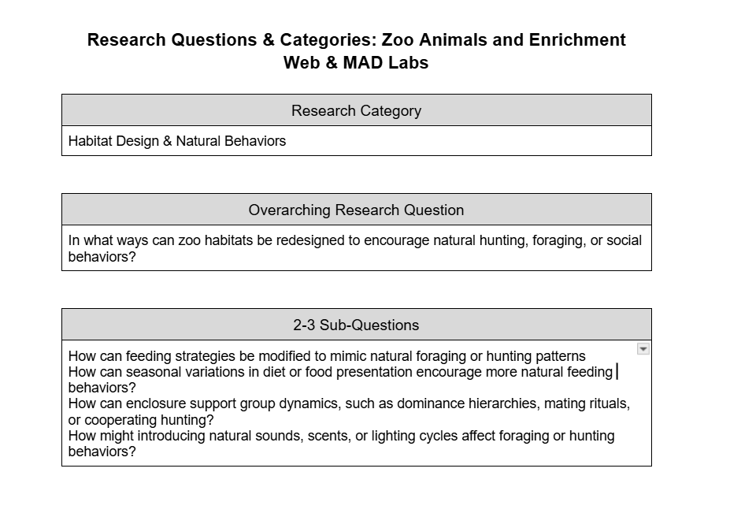

Projects
Coding projects that I’ve done in my CART lab. Click on the title of the projects to learn more about them. Check it out!

BioShield Project
First understanding of how to develop a marketing website. This was a process of finding ideas and inspiration from other companies with successful products, the graphic lookout that attracts customers, and using AI generated background for this fake advertisement.

PawPal
Class assigned project of creating a Pet Wellness Tracking App. This project took a lot of inspiration from other pet tracking apps that looked simplistic and efficient. Some of the important functions were making sure to add pets, check their activity in a diagram or statistic, and let the user sign in and out. For this project we were told to create both a desktop and mobile version of our website.

Fresno Chaffee Zoo Enrichment App
We reached out to the Fresno Chaffee Zoo in which they needed an enrichment app that was simple to use. My class decided to redesign their enrichment, and we called it Zoologix. This project expanded from October to December, and later we refined it in January.

To-Do List Project
Built an interactive, functional, to-do app using HTML, CSS, and Javascript. The task of this assignment was to input a task and add it to the list. There were other functions required such as making some tasks starred or high priority, dragged and dropped in different orders,s and check them off to distinguish them from active tasks.

Budget Calculator
We collaborated with EECU in which they wanted a budget calculator that would benefit graduate students and young adults. This calculation was made to help understand the different occupations and salaries and where the money goes.

Pokemon Adventure Project
This project involved creating an interactive Pokemon-inspired adventure using HTML, CSS, and Javascript. The game followed the structure of the 12-step Monomyth (Hero’s Journey) while allowing players to interact with dialogue, battle/catch Pokemon, and progress through branching story paths.

Zoo Case Study
This research case study focused on how zoo habitats can be redesigned to encourage more natural animal behavior through environmental enrichment and habitat complexity. The goal of this project was to analyze how zoos support animal behaviors such as hunting, foraging, and social interaction.
You’ve reached the bottom! This is all I have for now. If you have any questions feel free to ask me!
 nylia.vang1@gmail.com
nylia.vang1@gmail.com